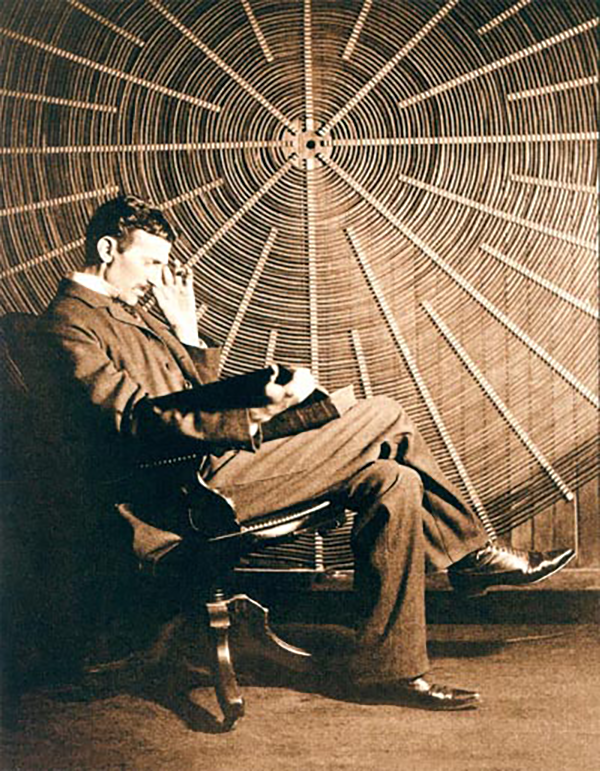

METROPOLIS OF SCIENCE
THE CURRENT WARS
Nikola Tesla in front of the spiral coil of his high-voltage transformer at East Houston Street, New York. (Source: Tesla Memorial Society of New York)
Nikola Tesla pioneered the use of alternating electrical current and played a critical role in the development of radio, fluorescent lighting, spark plugs, remote control and robots
By David Funkhouser
Nikola Tesla breathed his last breath, alone and poor, in Room 3327 at the New Yorker Hotel in 1943 at the age of 87. By that time, his vision, inventiveness and relentless hard work had helped to light the world with electricity and build the modern electric power industry.
An eccentric physicist and electrical engineer, Tesla worked at the center of a creative storm of technology that swept the United States in the late 19th century, when inventions revolutionized how we moved, communicated and manufactured.
Tesla pioneered the use of alternating electrical current in his induction motors, generators and many other designs and devices. He also played a role in the development of radio, fluorescent lighting, spark plugs, remote control and robots. He did most of his designing in his head, and he filed hundreds of patents—but never got rich.
Tesla’s life was intimately intertwined with New York City, from the day he arrived from Europe in 1884 to work for Thomas Edison. A bachelor and, later in life, a recluse, he lived in a series of hotels, often neglecting his bills. He ran laboratories at 89 Liberty St., near what is now the World Trade Center site, and at 46-48 East Houston Street and 35 South Fifth Avenue.
Tesla was born in Croatia. His father wanted Tesla to follow him into the priesthood, but Tesla preferred engineering. He enrolled at a technical college in Gratz, Austria, where in a physics class he saw his first demonstration of an electric motor that used direct current; Tesla thought a more efficient one might be devised using alternating current, but his professor insisted the idea was impossible.

Tesla spent the last 10 years of his life at the New Yorker Hotel at 481 Eighth Avenue He lived in a suite on the 33rd floor. (Photo: David Funkhouser)
Tesla set out to prove him wrong. One evening several years later, he was walking in a park in Budapest with a friend, reciting a bit of Goethe from memory, when inspiration struck, as he put it, “like a bolt of lightning.” He took up a stick and drew a design in the sand that would become the model for his AC motor. At the time he worked for an American telephone exchange in Budapest, and success there won him a posting in Paris with a new lighting company started by Edison. A letter of introduction to Edison led Tesla to New York.
Edison had begun building lighting systems for cities based on direct current. But direct current could not be transmitted over long distances, necessitating a network of expensive power plants and limiting its use to more densely populated areas. Tesla, whom Edison had hired to repair and redesign electrical equipment, insisted AC offered a better way. Edison didn’t heed Tesla, and Tesla quit over a dispute about pay.
George Westinghouse, however, saw the future in AC current. Tesla went to work for Westinghouse, and soon saw success: He lit up the Columbia World Exposition in Chicago in 1893 and designed the first hydroelectric power plant for Niagara Falls. In the end, AC won the “current wars” and became the basis for our electric power system today.
Despite these accomplishments, Tesla became involved in increasingly far-reaching projects for which he had trouble delivering the goods. At the turn of the century, for instance, he convinced J.P. Morgan to back an effort to create a worldwide wireless communications system. Tesla had a massive tower and facility built on Long Island, but Morgan pulled out.
Tesla’s genius was accompanied by nervous breakdowns, hallucinations and odd phobias. Women’s earrings turned him off, and he could not touch human hair. His closest companion may well have been a white pigeon he kept in his room at the New Yorker Hotel.
Connecting to Device
Device is Ready